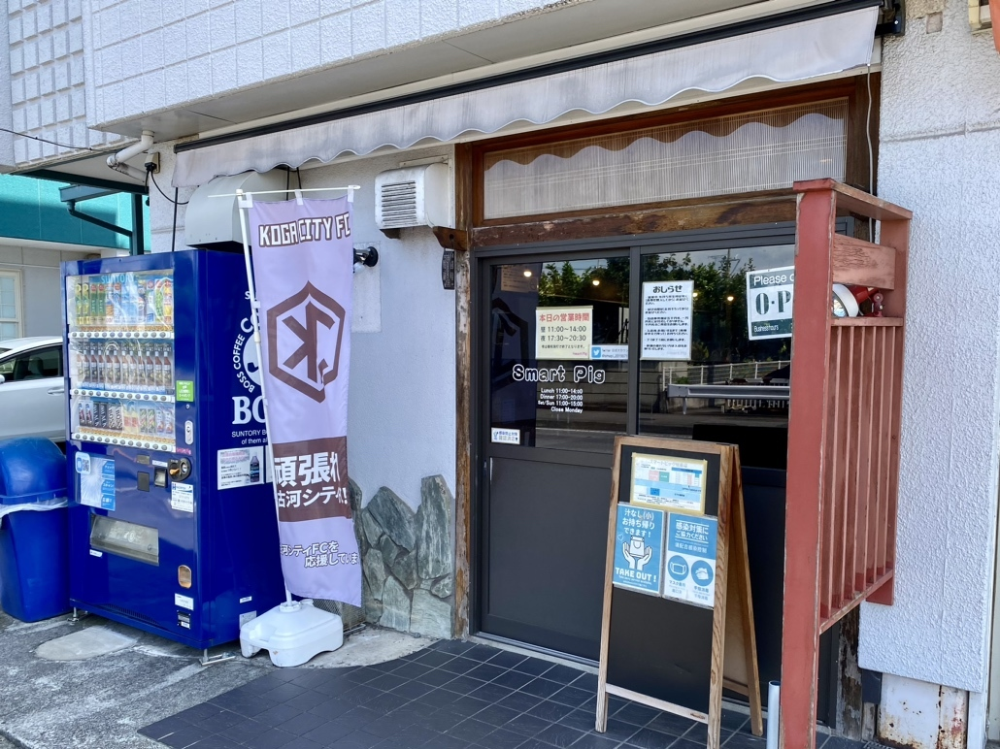
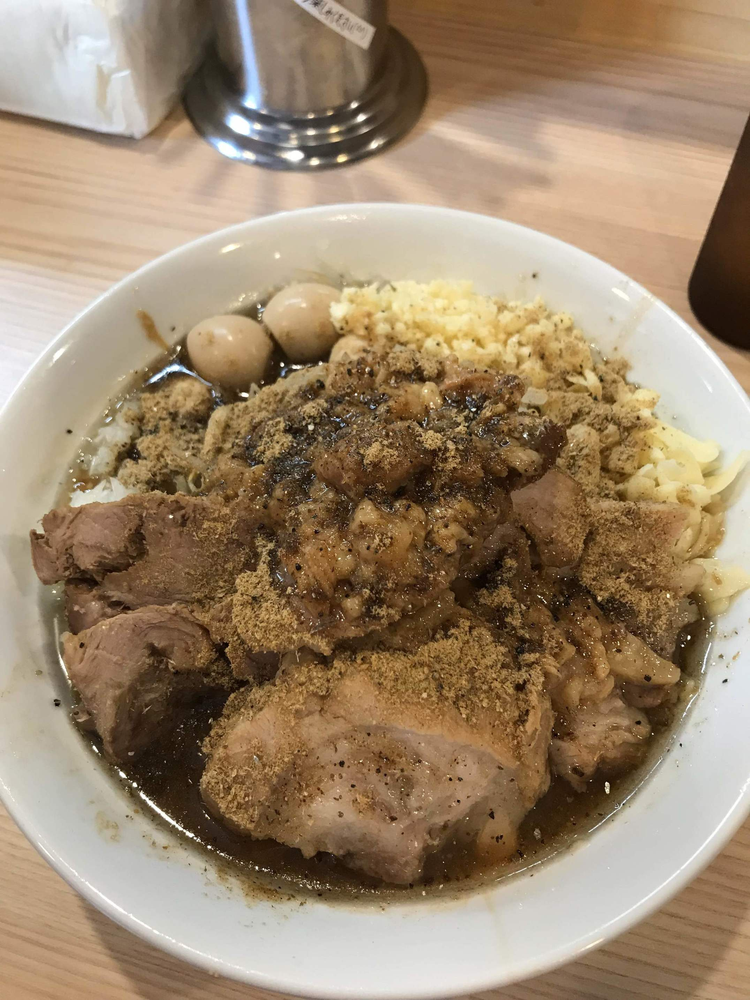
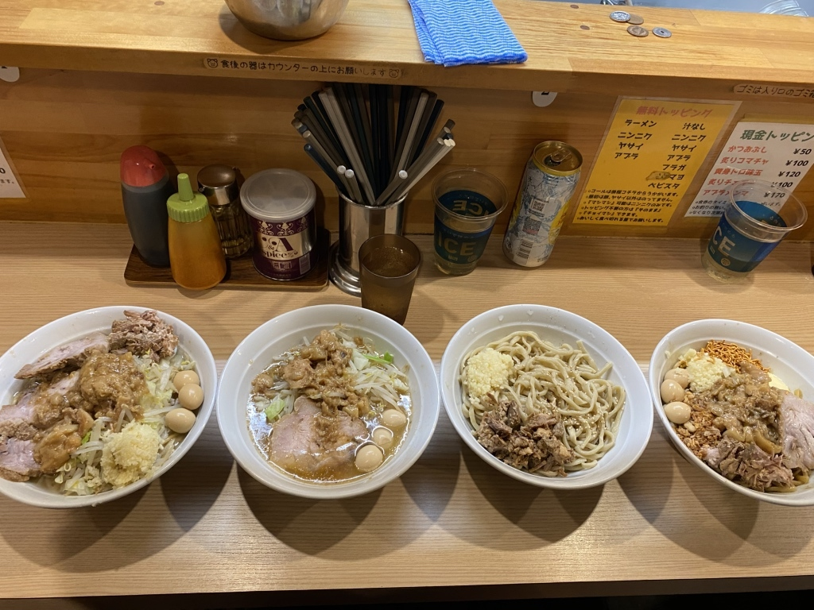
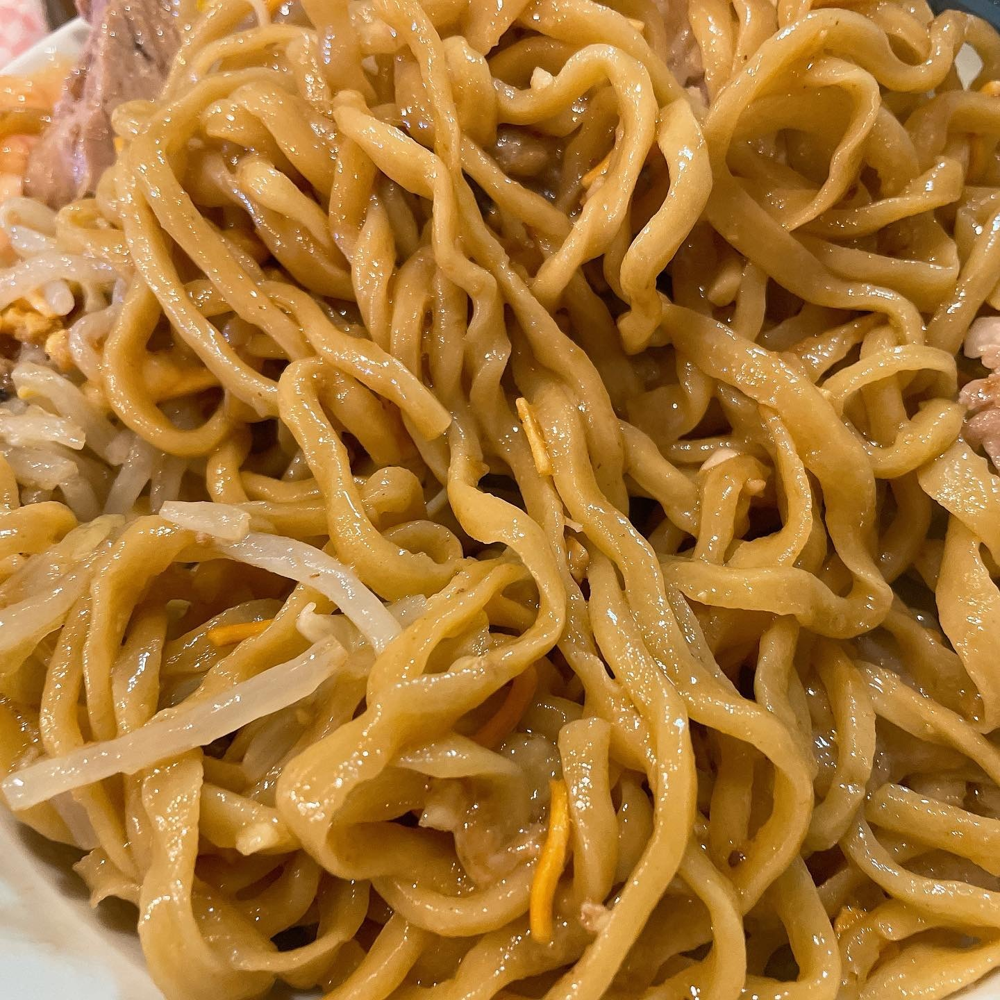
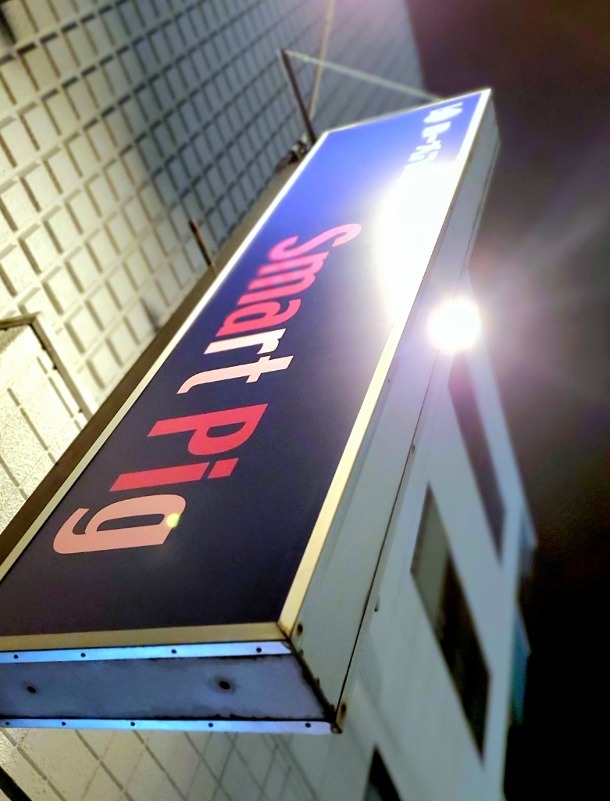
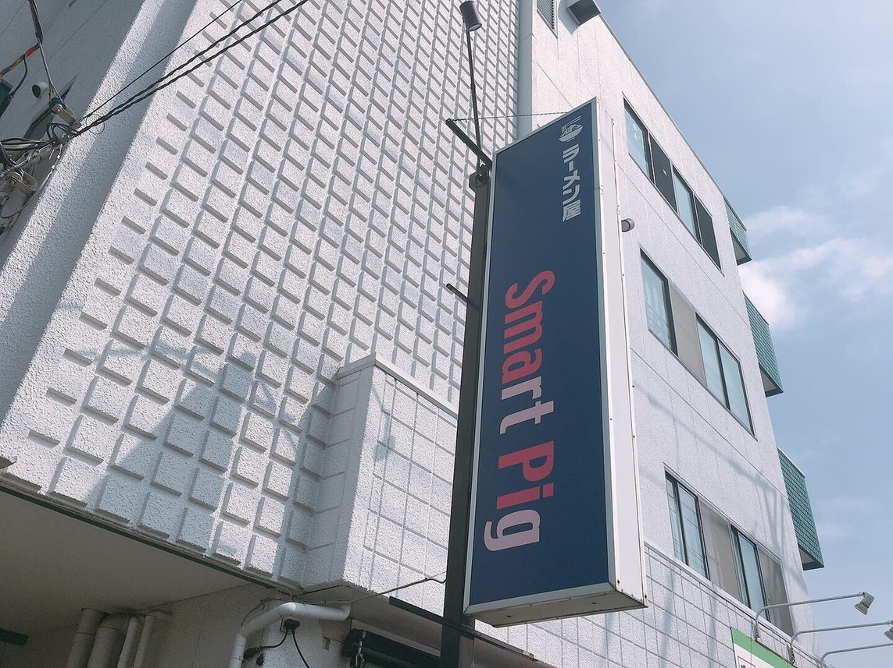

茨城県古河市旭町の二郎インスパイア、ラーメン屋 Smart Pig（スマートピッグ）でございます。湯気の立つ一杯を、カウンターからお出しします。
火〜金 11:00〜14:00／17:30〜20:30 土・日・祝 11:00〜15:00 月曜定休 ※材料が無くなり次第 終了
店主から
「コールは後程コチラからうかがいます」
食券は、先に券売機でお求めください。
あとはお席に着いて、そのままお待ちください。
マシマシと言えるのは、ニンニクだけでございます。
当店の柱は、この三つでございます。スープも豚も、この店の中で仕込んでおります。仕上げた一杯は、どうか熱いうちにお召し上がりください。

ご予約は承っておりません。食券をお求めいただいた順に、ご案内いたします。
まず、券売機で食券をお求めください。
混み合う時間帯は、食券をお求めのうえでお並びください。
お席で少しお待ちいただくと、こちらからお好みをうかがいます。そのときに、ニンニク・ヤサイ・アブラの増減をお伝えください。「マシマシ」可能はニンニクのみです。「チョイマシ」もできます。トッピング不要の方は「そのまま」とお伝えください。
お支払いは現金のみ、食券制でございます。お値段は店内の券売機に掲げております。
カウンター八席の店ですので、混み合う時間帯はお待ちいただくことがございます。

麺の量は、食券をお渡しいただくときにお決めください。
小は200g、中は300g、大は400gでございます。麺増しは100gずつ承ります。少なめをご希望の方は、食券のタイミングでお伝えください。中高生のお客様は、麺増し（100g）を無料でお付けします。

「お店の人はとても優しくコールの仕方も目の前に書いてあり初めてでも注文しやすい…」
食べログのクチコミより（2025年8月）
「微乳化のガツンと硬派な二郎インスパイア。切れ味の強い濃いめのスープ。」
食べログのクチコミより（2025年7月）
材料が無くなり次第、終了とさせていただきます。夜は看板消灯で終了となります。
その日の営業（昼のみの日・夜もある日）は、公式Xでお知らせします。お出かけ前にご覧いただけますと確かです。
お車は、店を左手に通り過ぎたところにある駐車場内に、5台分ご用意しております。ご入店の前に、お停めの場所のご確認をお願いいたします。

古河市旭町で営んでおります。道順は、地図のルート検索でご確認いただけます。

| 住所 | 〒306-0012 茨城県古河市旭町2-9-4 あさひビル3号棟101（1F） |
|---|---|
| 営業時間 | 火〜金 11:00〜14:00／17:30〜20:30 土・日・祝 11:00〜15:00 材料が無くなり次第終了 昼のみの日がございます。当日の営業は公式Xでお知らせします。 |
| 定休日 | 月曜 |
| 席数 | カウンター8席 |
| 駐車場 | あり・5台（店を左手に通り過ぎたところ） |
| お支払い | 現金のみ（食券制） |
| 喫煙 | 全席禁煙 |